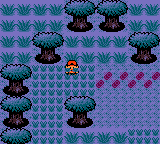
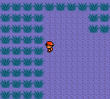

Generation II Safari Zone
Alternative map locations (Generation I) | Alternative Route 104 map | Battle Park (Platinum) | Generation II Safari Zone | Haunted House | Jubilife Condominiums floors 3 and 4 | Map 0x0B (Generation I) | Map 0x6F (Generation I) | Mystery Zone | Record Corner (FireRed/LeafGreen) | R/S Flower Shop (Festa 2002 demo) | Special (location) | Special Area | Sevii Islands 8 and 9 | Unused Olivine City house | Unused Sunyshore City house | Unused Celadon City house
Though Pokémon Red, Blue, and Yellow have a Safari Zone that can be accessed through normal gameplay, Pokémon Gold, Silver and Crystal do not.
Despite this, there is an unused Safari Zone in Gold, Silver and Crystal. The area can be accessed via hacking or using a cheating device. There is no documented way to get to it by means of a glitch.
GameShark Codes
Three sets of codes are listed here. One is a Game Genie code that restores the door of the Safari Zone's gate in Fuchsia City. The other two are GameShark codes: one changes the behavior of any warp tile to that of a hole tile while the other is the "walk through walls" code. These GameShark codes can be used instead of the Game Genie code. Furthermore, the code to change the tile behavior is required to trigger the unused warps inside the Safari Zone.
The Game Genie code to unlock access to the gate in all language versions of Gold, Silver, and Crystal:
3A6-0E9-19F
The GameShark code to change the behavior of warp tiles is:
- English & non-English European Gold and Silver
01600BD2
- Japanese Gold and Silver
0160FED1
- Korean Gold and Silver
0160C0D2
- English & non-English European Crystal
0160E4D4
- Japanese Crystal
0160D7D4
The GameShark codes to "walk through walls" are:
- English & non-English European Gold and Silver
0100A3CE 0100A4CE 0100A5CE 0100A6CE
- Japanese Gold and Silver
010097CE 010098CE 010099CE 01009ACE
- Korean Gold and Silver
010078CE 010079CE 01007ACE 01007BCE
- English & non-English European Crystal
0100FAC2 0100FBC2 0100FCC2 0100FDC2
- Japanese Crystal
01003ED1 01003FD1 010040D1 010041D1
The Safari Zone
Assuming that a player used the gatehouse codes, they should find themselves inside of a typical gate building. This gate bridges Fuchsia City and the Safari Zone. Exiting through the south entrance will return the player to Fuchsia City, where the player will end up lodged in a wall.
If the player exits through the northern entrance, they will find themselves in an incomplete Safari Zone. The entrance is quite glitched, and the water is not surrounded by a coastline or sand, but the area is otherwise complete. The glitched entrance can be walked on, but the player cannot use it to return to the gate. The map's border uses the huge grass tile.
The Safari Zone appears to use the same tileset as the National Park, possessing both tall and huge grass. The map is rather small, and no wild Pokémon appear in the grass, but normal Pokémon can be encountered by using an Old Rod, Good Rod or Super Rod at the pond.
Unused warp
The "entrance" to the Safari Zone is actually still in the game. In Pokémon Gold, Silver, Crystal and other games, doors are powered by "warps" -- invisible objects placed over doors. When a player steps on a warp, they are immediately moved to wherever the warp "pointed" -- and warps can only point to other warps. The doors in the games do nothing; it is the invisible warps placed over them that do the work.
Hackers have discovered that there is still a warp to the Safari Zone in Fuchsia City. The warp is unusable, however, because it was placed over a brick wall, which the player cannot walk onto. This is why, if a player exits the Safari Zone gatehouse using the south entrance, they end up standing on a wall -- that is the warp to and from the Safari Zone.
Screenshots
A player stands on the glitched entrance. |
||
The lake. |
 | |
|  West boundary. |
Southern boundary. |
East boundary. |
Map
This is a map of the unused Safari Zone.